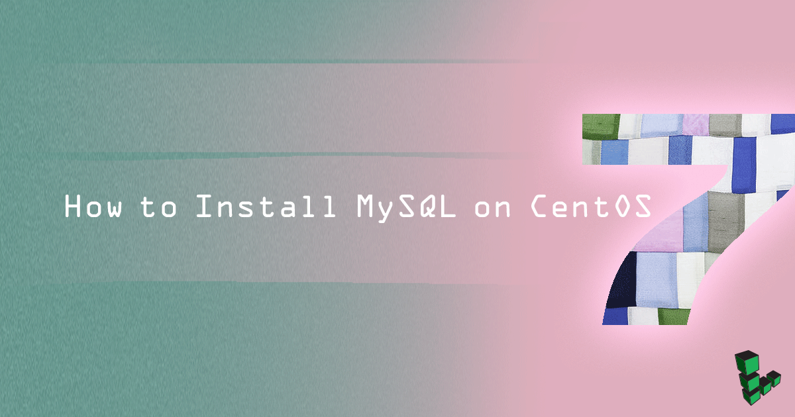

How to Install MySQL on CentOS 7
Updated by Linode Written by Linode

MySQL is a popular database management system used for web and server applications. However, MySQL is no longer in CentOS’s repositories and MariaDB has become the default database system offered. MariaDB is considered a drop-in replacement for MySQL and would be sufficient if you just need a database system in general. See our MariaDB in CentOS 7 guide for installation instructions.
If you nonetheless prefer MySQL, this guide will introduce how to install, configure and manage it on a Linode running CentOS 7.
Large MySQL databases can require a considerable amount of memory. For this reason, we recommend using a high memory Linode for such setups.
NoteThis guide is written for a non-root user. Commands that require elevated privileges are prefixed withsudo. If you’re not familiar with thesudocommand, you can check our Users and Groups guide.
Before You Begin
Ensure that you have followed the Getting Started and Securing Your Server guides, and the Linode’s hostname is set.
To check your hostname run:
hostname hostname -fThe first command should show your short hostname, and the second should show your fully qualified domain name (FQDN).
Update your system:
sudo yum updateYou will need
wgetto complete this guide. It can be installed as follows:yum install wget
Install MySQL
MySQL must be installed from the community repository.
Download and add the repository, then update.
wget http://repo.mysql.com/mysql-community-release-el7-5.noarch.rpm sudo rpm -ivh mysql-community-release-el7-5.noarch.rpm yum updateInstall MySQL as usual and start the service. During installation, you will be asked if you want to accept the results from the .rpm file’s GPG verification. If no error or mismatch occurs, enter
y.sudo yum install mysql-server sudo systemctl start mysqld
MySQL will bind to localhost (127.0.0.1) by default. Please reference our MySQL remote access guide for information on connecting to your databases using SSH.
NoteAllowing unrestricted access to MySQL on a public IP not advised but you may change the address it listens on by modifying thebind-addressparameter in/etc/my.cnf. If you decide to bind MySQL to your public IP, you should implement firewall rules that only allow connections from specific IP addresses.
Harden MySQL Server
Run the
mysql_secure_installationscript to address several security concerns in a default MySQL installation.sudo mysql_secure_installation
You will be given the choice to change the MySQL root password, remove anonymous user accounts, disable root logins outside of localhost, and remove test databases. It is recommended that you answer yes to these options. You can read more about the script in the MySQL Reference Manual.
NoteIf MySQL 5.7 was installed, you will need the temporary password that was created during installation. This password is notated in the
/var/log/mysql.logfile, and can be quickly found using the following command.sudo grep 'temporary password' /var/log/mysqld.log
Using MySQL
The standard tool for interacting with MySQL is the mysql client which installs with the mysql-server package. The MySQL client is used through a terminal.
Root Login
To log in to MySQL as the root user:
mysql -u root -pWhen prompted, enter the root password you assigned when the mysql_secure_installation script was run.
You’ll then be presented with a welcome header and the MySQL prompt as shown below:
mysql>To generate a list of commands for the MySQL prompt, enter
\h. You’ll then see:List of all MySQL commands: Note that all text commands must be first on line and end with ';' ? (\?) Synonym for `help'. clear (\c) Clear command. connect (\r) Reconnect to the server. Optional arguments are db and host. delimiter (\d) Set statement delimiter. NOTE: Takes the rest of the line as new delimiter. edit (\e) Edit command with $EDITOR. ego (\G) Send command to mysql server, display result vertically. exit (\q) Exit mysql. Same as quit. go (\g) Send command to mysql server. help (\h) Display this help. nopager (\n) Disable pager, print to stdout. notee (\t) Don't write into outfile. pager (\P) Set PAGER [to_pager]. Print the query results via PAGER. print (\p) Print current command. prompt (\R) Change your mysql prompt. quit (\q) Quit mysql. rehash (\#) Rebuild completion hash. source (\.) Execute an SQL script file. Takes a file name as an argument. status (\s) Get status information from the server. system (\!) Execute a system shell command. tee (\T) Set outfile [to_outfile]. Append everything into given outfile. use (\u) Use another database. Takes database name as argument. charset (\C) Switch to another charset. Might be needed for processing binlog with multi-byte charsets. warnings (\W) Show warnings after every statement. nowarning (\w) Don't show warnings after every statement. For server side help, type 'help contents' mysql>
Create a New MySQL User and Database
In the example below,
testdbis the name of the database,testuseris the user, andpasswordis the user’s password.create database testdb; create user 'testuser'@'localhost' identified by 'password'; grant all on testdb.* to 'testuser' identified by 'password';You can shorten this process by creating the user while assigning database permissions:
create database testdb; grant all on testdb.* to 'testuser' identified by 'password';Then exit MySQL.
exit
Create a Sample Table
Log back in as
testuser.mysql -u testuser -pCreate a sample table called customers. This creates a table with a customer ID field of the type INT for integer (auto-incremented for new records, used as the primary key), as well as two fields for storing the customer’s name.
use testdb; create table customers (customer_id INT NOT NULL AUTO_INCREMENT PRIMARY KEY, first_name TEXT, last_name TEXT);Then exit MySQL.
exit
Reset the MySQL Root Password
If you forget your root MySQL password, it can be reset.
Stop the current MySQL server instance, then restart it with an option to not ask for a password.
sudo systemctl stop mysqld sudo mysqld_safe --skip-grant-tables &Reconnect to the MySQL server with the MySQL root account.
mysql -u rootUse the following commands to reset root’s password. Replace
passwordwith a strong password.use mysql; update user SET PASSWORD=PASSWORD("password") WHERE USER='root'; flush privileges; exitThen restart MySQL.
sudo systemctl start mysqld
Tune MySQL
MySQL Tuner is a Perl script that connects to a running instance of MySQL and provides configuration recommendations based on workload. Ideally, the MySQL instance should have been operating for at least 24 hours before running the tuner. The longer the instance has been running, the better advice MySQL Tuner will give.
Download MySQL Tuner to your home directory.
wget https://raw.githubusercontent.com/major/MySQLTuner-perl/master/mysqltuner.plTo run it:
perl ./mysqltuner.plYou will be asked for the MySQL root user’s name and password. The output will show two areas of interest: General recommendations and Variables to adjust.
MySQL Tuner is an excellent starting point to optimize a MySQL server but it would be prudent to perform additional research for configurations tailored to the application(s) utilizing MySQL on your Linode.
Still have a few questions?Join our Community and post your questions for other Linode and Linux enthusiasts to help you out.
Related Questions:
More Information
You may wish to consult the following resources for additional information on this topic. While these are provided in the hope that they will be useful, please note that we cannot vouch for the accuracy or timeliness of externally hosted materials.
- MySQL 5.6 Reference Manual
- PHP MySQL Manual
- Perl DBI examples for DBD::mysql
- MySQLdb User’s Guide
- MySQL Tuner Tutorial
Join our Community
Find answers, ask questions, and help others.
This guide is published under a CC BY-ND 4.0 license.